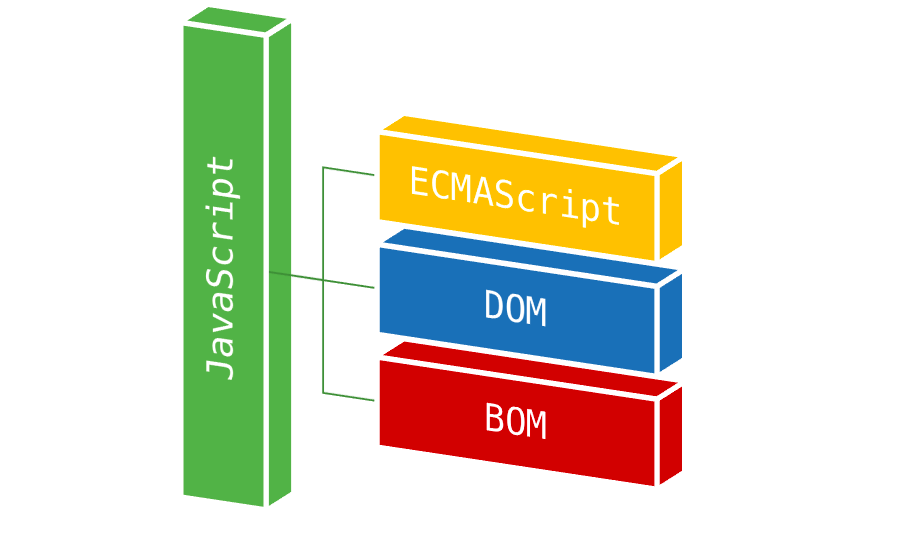
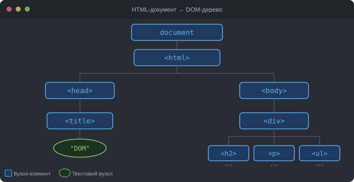
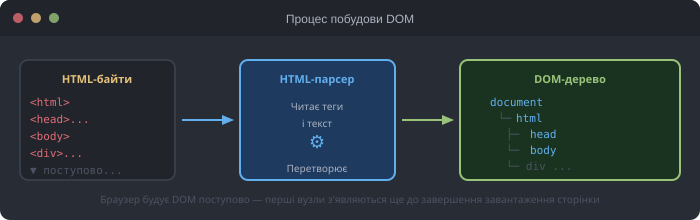
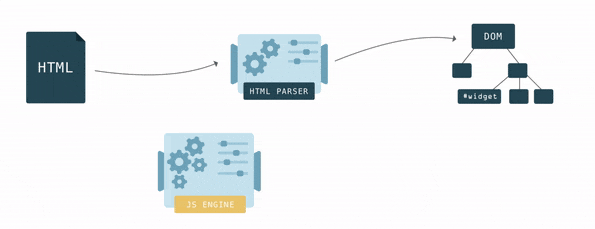
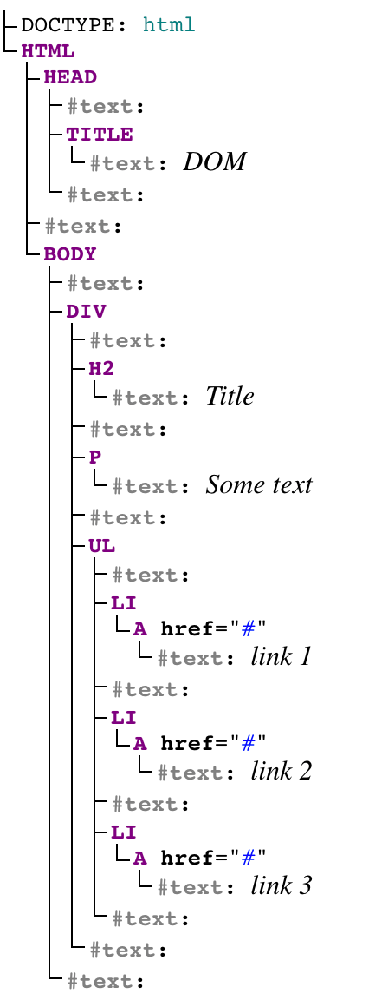

1. Вступ
Коли ми працюємо з браузером, доступний функціонал складається з декількох частин, оскільки JavaScript сам по собі не має інструментів для роботи з браузером.

DOM (Document Object Model, Об'єктна модель документа) — міжплатформовий, незалежний від мови інтерфейс для роботи з HTML-документом. Містить набір властивостей і методів, що дозволяють шукати, створювати і видаляти елементи, реагувати на дії користувача і інше.
BOM (Browser Object Model, Об'єктна модель браузера) — міжплатформовий, незалежний від мови інтерфейс для роботи з вікном браузера. Містить набір властивостей і методів, що дозволяють отримати доступ безпосередньо до поточної вкладки і ряду функцій браузера. Включає об'єкт роботи з історією, місцем розташування та інше.
2. Об'єктна модель документа
DOM є відображенням HTML-документа. Це деревоподібна структура, в якій кожен вузол це JavaScript-об'єкт з властивостями і методами, що представляє частину HTML-документа. Об'єкти можуть керуватися програмно, і будь-які зміни відображаються в документі.
DOM виконує дві ролі: є об'єктним поданням HTML-документа, і діє як інтерфейс, який з'єднує сторінку з мовою програмування, наприклад JavaScript.
Кожен елемент в документі, весь документ в цілому, заголовок, посилання, абзац - це частини DOM цього документа, тому всі вони можуть змінюватися за допомогою JavaScript.
3. HTML-документ і DOM
Згідно DOM-моделі кожен тег утворює окремий елемент-вузол, кожен фрагмент
тексту — текстовий вузол, таким чином HTML-документ це ієрархічне дерево. Це
означає, що у кожного елемента (крім кореневого) є тільки один батько, тобто
елемент, всередині якого він розташовується. Це дерево утворюється за рахунок
вкладеної структури тегів і текстових елементів.

Щоб відобразити HTML-документ, браузер спочатку перетворює його в формат який
він розуміє — DOM. У рушія браузера є спеціальний фрагмент коду —
HTML-парсер, який використовується для перетворення HTML в DOM.
В HTML, вкладеність визначає відносини батько-дитина між елементами. В DOM,
об'єкти пов'язані в структурі дерева даних, фіксуючи ці відносини.
Браузер будує DOM поступово — як тільки приходять перші фрагменти коду, він починає розбирати HTML, додаючи вузли в деревоподібну структуру.

Після того як DOM-дерево побудовано, можна знайти в ньому елемент за допомогою JavaScript і виконувати з ним якісь дії, оскільки кожен вузол має інтерфейс з безліччю властивостей і методів.

4. DOM-дерево
Складемо дерево HTML-документа використовуючи генератор DOM-дерева.
<html>
<head>
<title>DOMtitle>
head>
<body>
<div>
<h2>Titleh2>
<p>Some textp>
<ul>
<li><a href="#">link 1a>li>
<li><a href="#">link 2a>li>
<li><a href="#">link 3a>li>
ul>
div>
body>
html>

У цьому дереві виділені два типи вузлів:
- Вузли-елементи (element node) — утворюються тегами, природним чином
одні вузли вкладені в інші. Структура дерева утворена виключно за рахунок
них. - Текстові вузли (text node) — утворюються текстом всередині елементів.
Текстовий вузол містить тільки рядок тексту і не може мати нащадків, тобто він завжди на самому нижньому рівні ієрархії. Прогалини і переноси рядків це теж текстові вузли.
З цього правила є винятки: прогалини до head
ігноруються, а будь-який вміст після body НЕ створює вузла, браузер переносить
його в кінець body.
5. Типи вузлів DOM
У DOM існує дванадцять типів вузлів, але на практиці найчастіше зустрічаються три:
document— кореневий вузол, точка входу до DOM.- Вузли-елементи (
nodeType === 1) — HTML-теги:<div>,<p>,<a>тощо. - Текстові вузли (
nodeType === 3) — текст всередині елементів, включаючи пробіли і переноси рядків. - Коментарі (
nodeType === 8) —<!-- ... -->теж стають вузлами DOM.
6. Точки входу до DOM
Глобальний об'єкт document — головна точка входу. Через нього доступні
спеціальні властивості-скорочення для найважливіших елементів сторінки:
document.documentElement // <html>
document.head // <head>
document.body // <body>
Якщо скрипт розміщено в <head>, то document.body
дорівнює null — браузер ще не прочитав <body>. Тому скрипти, що звертаються
до DOM, розміщують перед </body> або використовують атрибут defer.